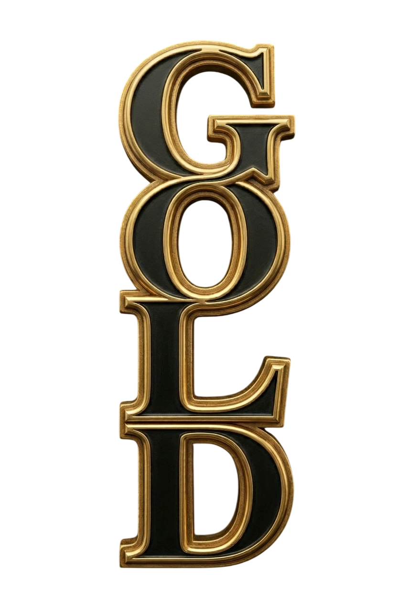
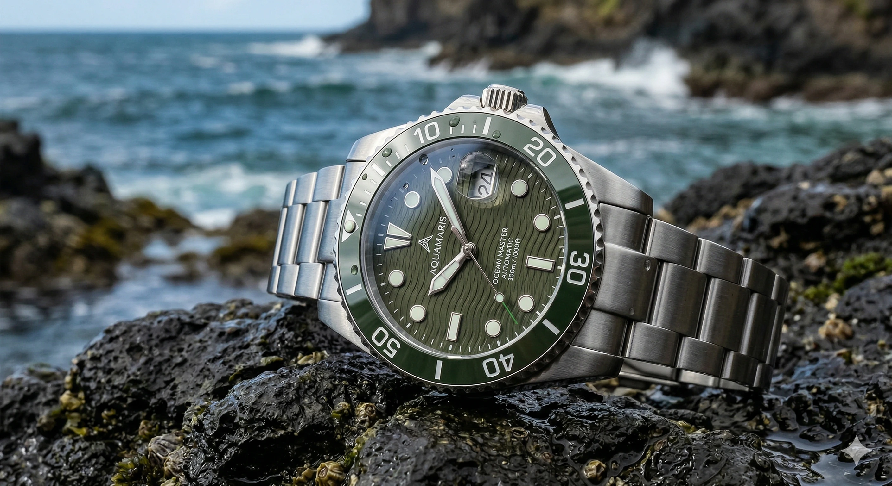
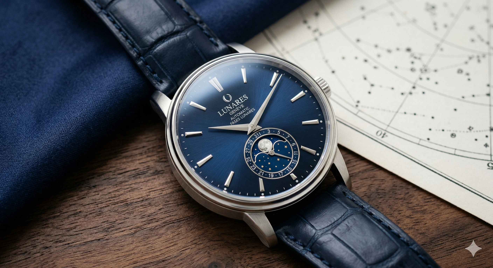
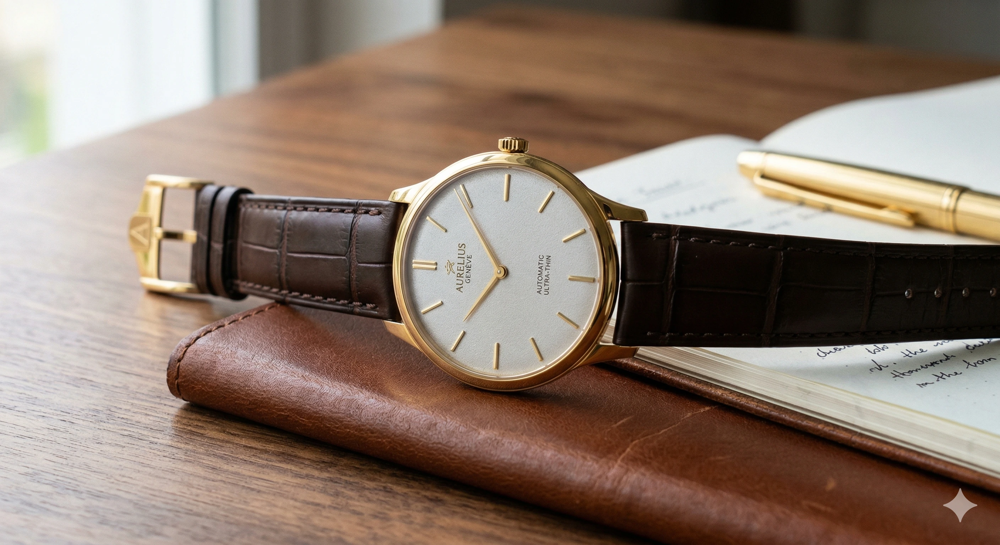

FINE JEWELRY & WATCHES
MODELOS PARA DAMA
Diamond Angel

Relojes
Pulseras
Joyería
Colgantes
Trajes
Zapatos
Vestidos
MODELOS PARA CABALLEROS



INGRESAR
MI CARRITO


. La esfera plateada cepillada guilloché es refinada. La correa es de satén negro c.webp)